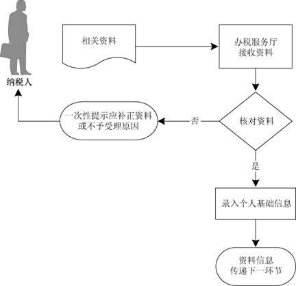

自然人纳税人登记
【业务描述】
以自然人名义纳税的中国公民、外籍人员和港澳台地区人员申请办理个人基础信息登记。
地税业务。
县级业务。
【政策依据】
《国家税务总局关于发布个人所得税申报表的公告》（国家税务总局公告2013年第21号）
【报送资料】
（1）《个人所得税基础信息表（B表）》。
（2）自然人居民身份证、护照或其他证明身份的合法原件及复印件。
（3）任职、受雇的外籍人员护照和港澳台地区人员回乡证、台胞证的原件及任职证书或者任职证明。
（4）履约的外籍人员护照和港澳台地区人员回乡证、台胞证的原件及从事劳务或服务的合同、协议原件。
【基本流程】

【基本规范】
（1）办税服务厅接收资料，核对资料是否齐全、是否符合法定形式、填写内容是否完整，符合的即时办结；不符合的当场一次性提示应补正资料或不予受理原因。
（2）录入个人基础信息内容，1个工作日内将相关资料信息转下一环节按规定程序处理。
【办理地点】
各地办税服务厅
【办理时间】
各地办税服务厅工作时间
【联系电话】
12366